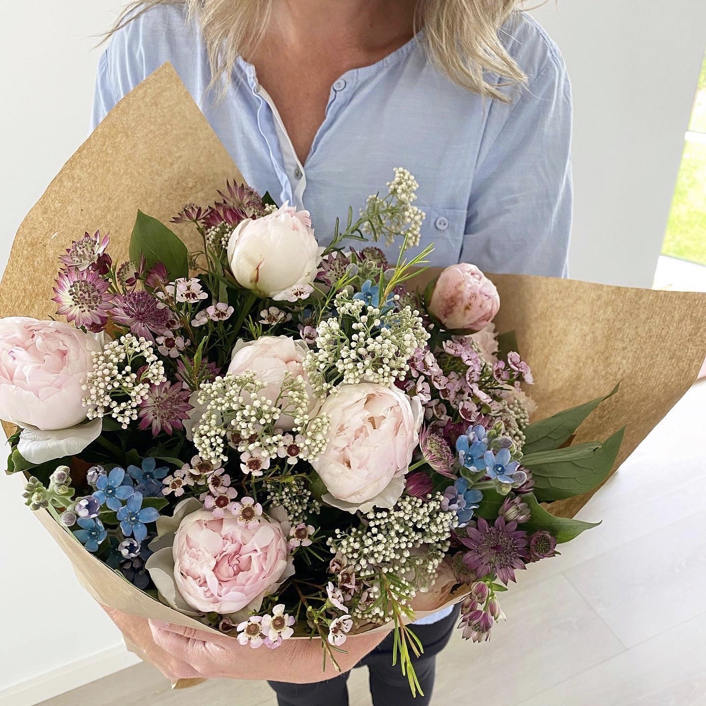
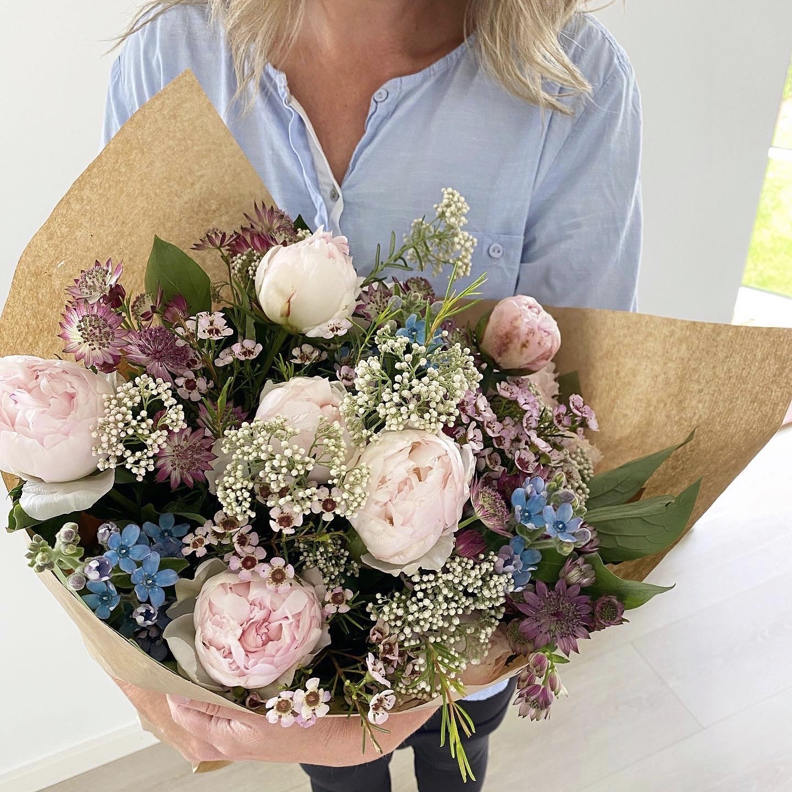
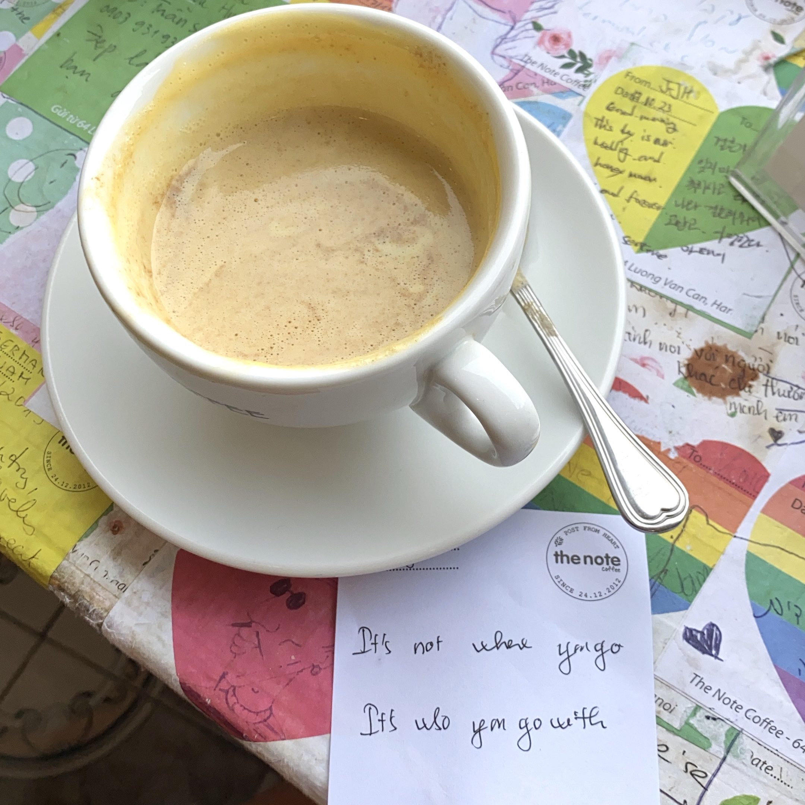
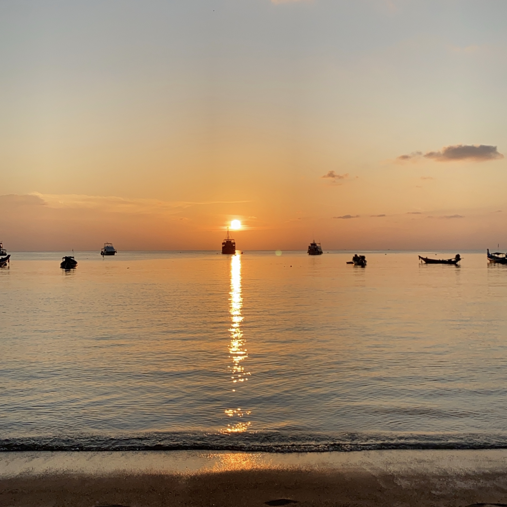
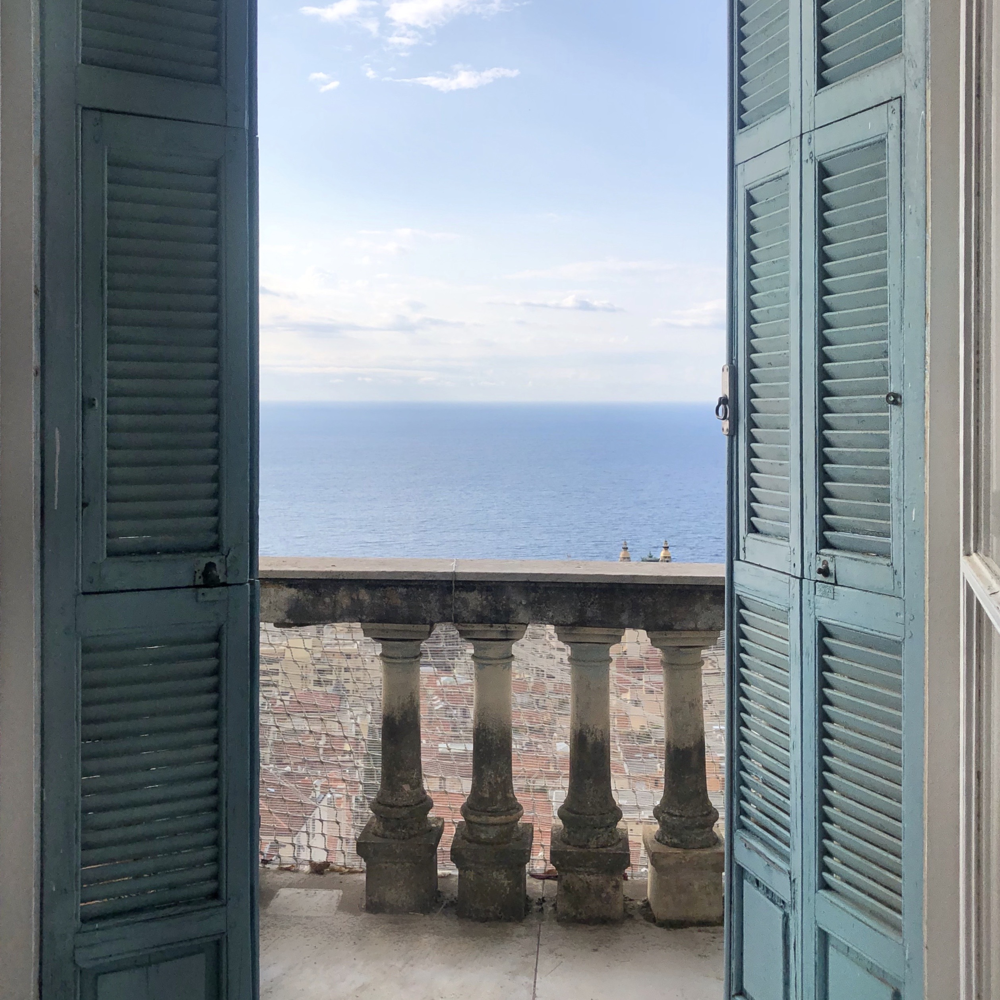
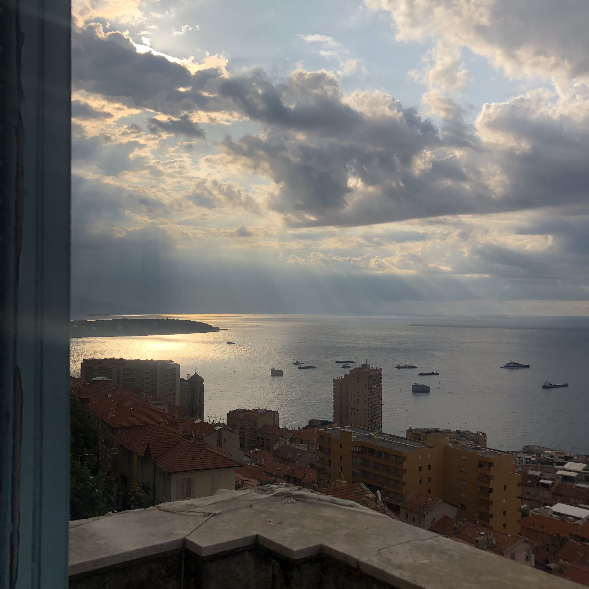
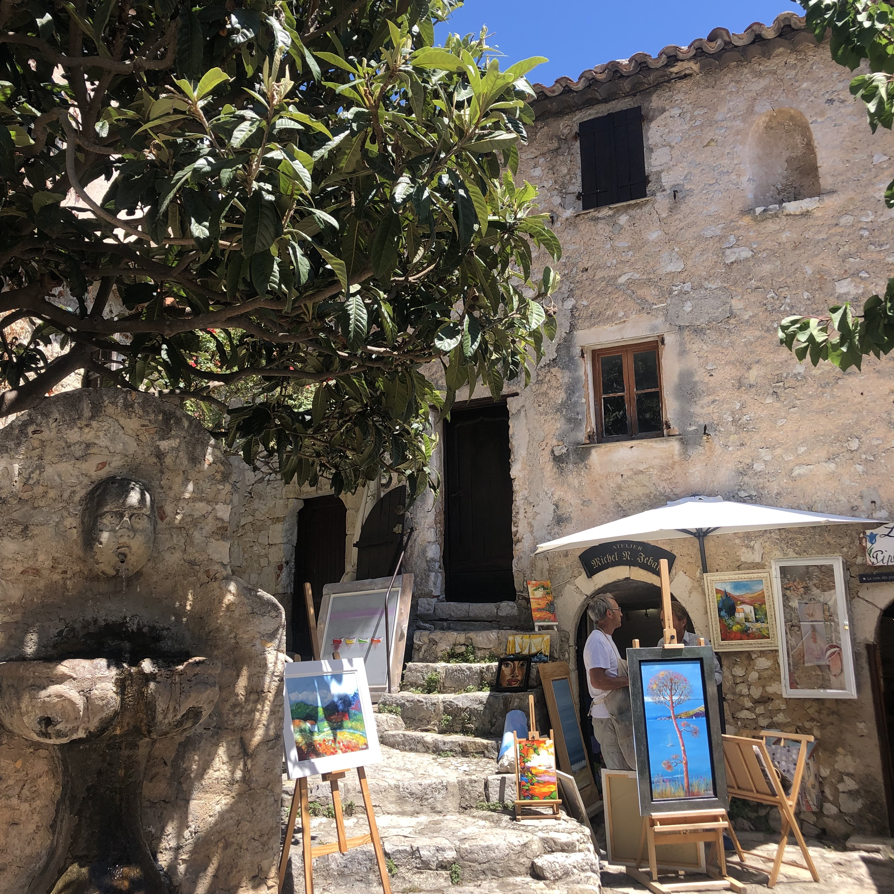
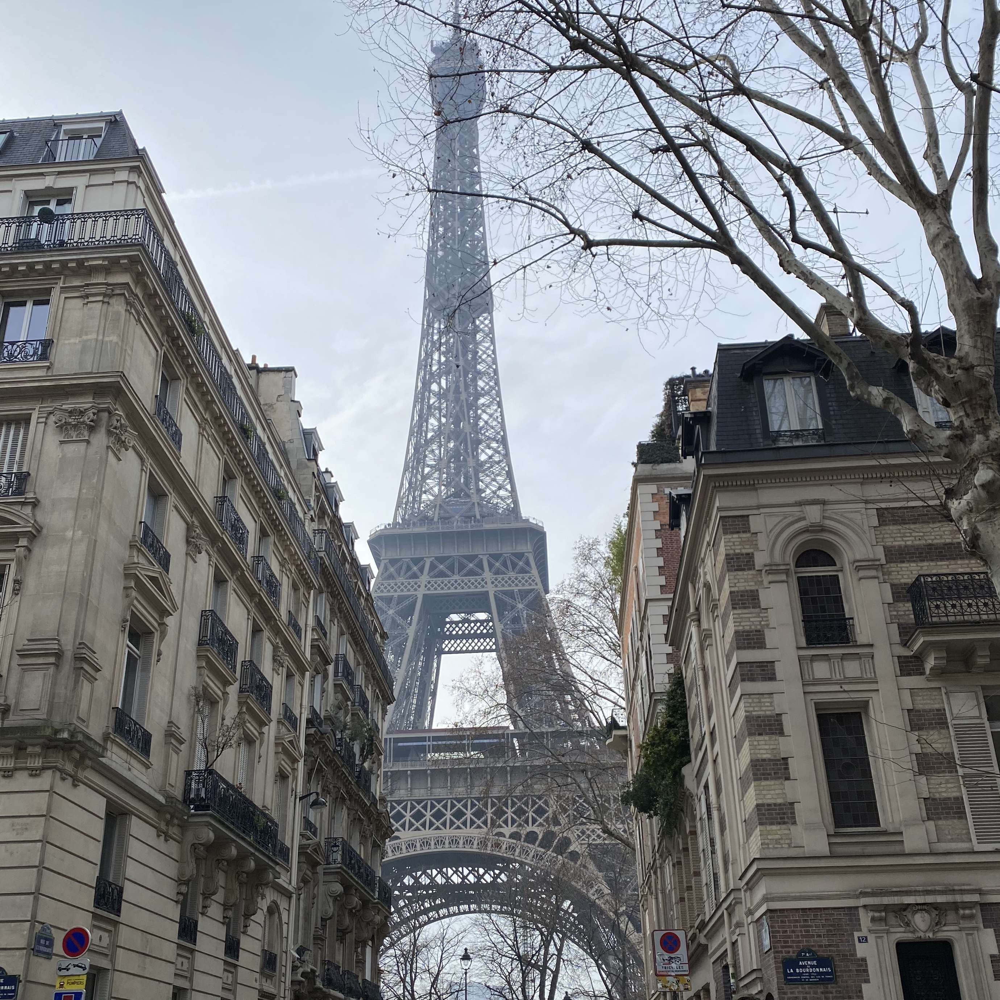
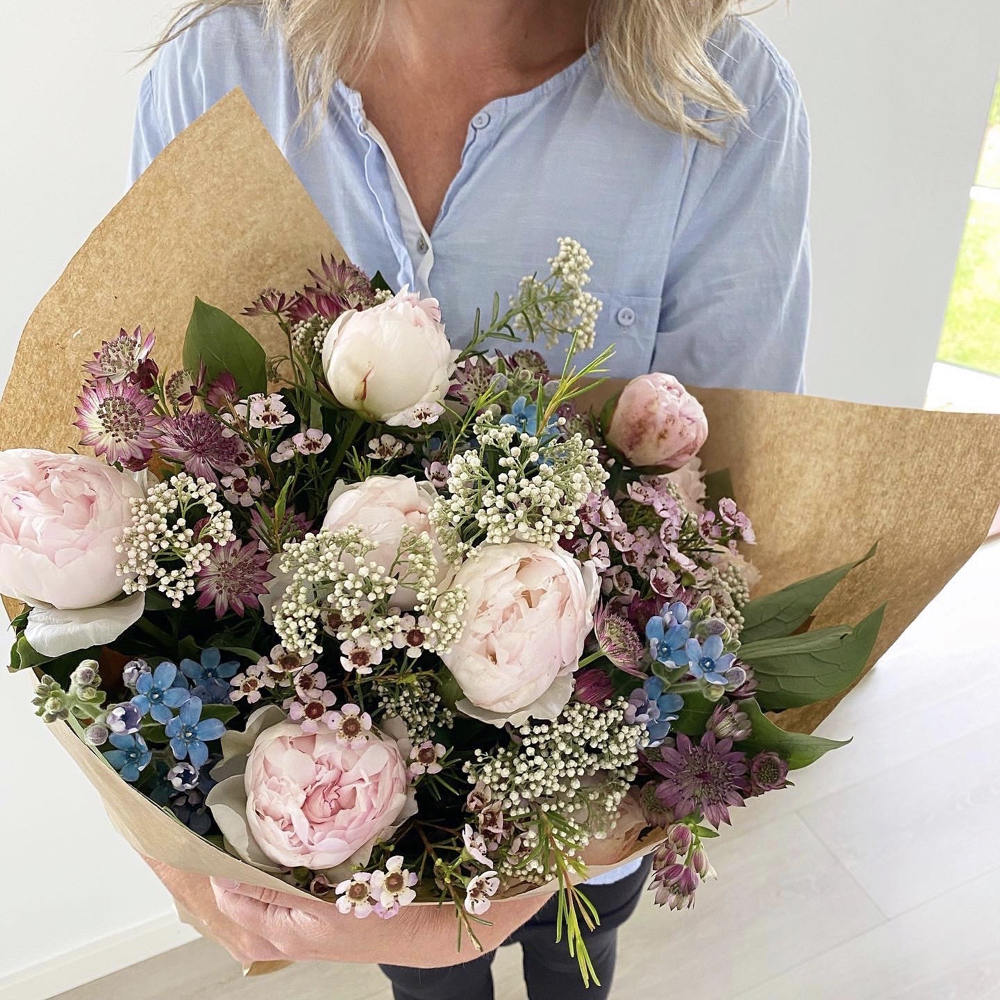

Portfolio
 
   
  
 Mit navn er Pernille Julie Dvoracek. Født i 1999, bor på Frederiksberg sammen med min kæreste August. Lige nu er jeg under uddannelse, som multimediedesigner hos CPH Business Academy i Lyngby. Det er jeg ganske enkelt fordi, at alt indenfor digital design og kommunikation har min store interesse. Jeg elsker at kunne bruge min kreativitet i hverdagen, kombineret med at lære alt indenfor markedsføring, så jeg kan løse den opgave bedst muligt, som jeg bliver stillet overfor.
Jeg er meget kreativ, god til at perspektivere og komme med alternative løsninger på problemstillinger. Folk ville nok omtale mig som yderst perfektionistisk, men sådan ser jeg ikke på det. Jeg går altid ind til alle opgaver for at løse dem til et 12-tal hver gang, da jeg ikke går på kompromis med kvalitetenaf mit arbejde - om det så kræver man visker tavlen ren, og starter forfra igen-igen så er det det vi gør.
Jeg har altid dyrket meget sport, og håndbold har fyldt en stor del af mit liv. Derfor falder det mig naturligt ind, at være en del af et team og samarbejdet heri, men kan sagtens drible projekter igennem alene også!
Finder jeg stor inspiration i at opleve verden, og de forskellige kulturer. I 2019 rejste jeg rundt i Asien i 3 måneder, og jeg er stadigvæk klar på mange flere eventyrer.
Fylder min interesse for trends en stor del. Det gælder alt lige fra mode, digital design & bolig. Jeg elsker at bruge tid på, at nørde med indretning og små detaljer.
Dyrker jeg en hel masse sport og går op i sund kost fordi det gør mig glad. Sport i alle former har altid fyldt meget i min hverdag. Lige nu er det dog mere fitness & løb, der fanger min interesse. I 2019 løb jeg mit første halvmaraton, og er klar på både endnu et halvmaraton & maration i 2020!
| Navn: | ____________________ | Email: | ____________________ |
| Mobil: | ____________________ | Emne: | ____________________ |
| Besked: | ____________________ |